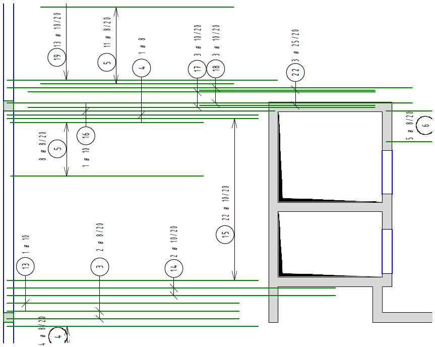
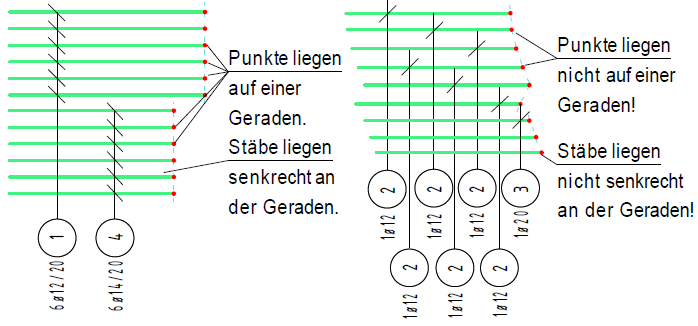
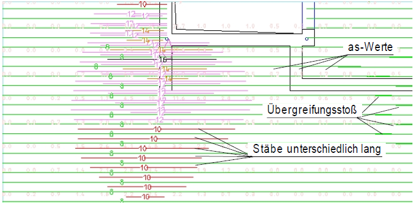
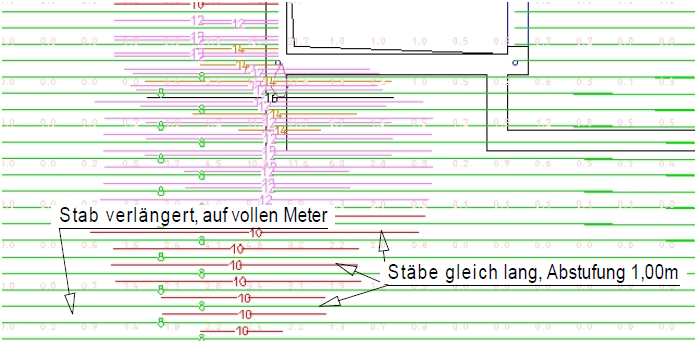
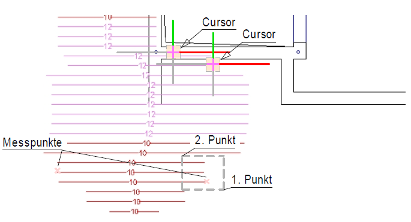
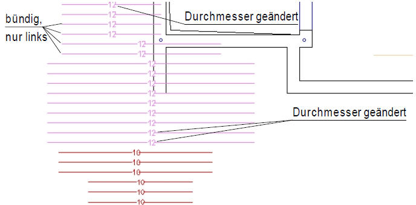
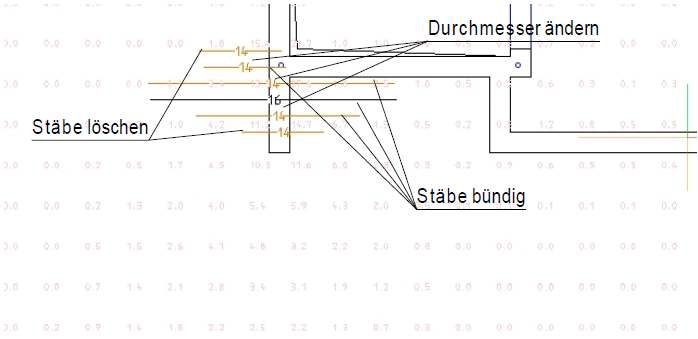
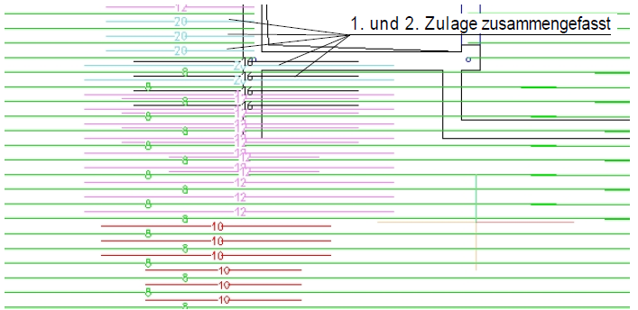

Bereiten Sie vor der automatischen Bewehrung den Grundriss soweit auf, dass dieser nur die wichtigsten geometrischen Elemente enthält.
1.Automatische Bewehrung vorbereiten
§Blenden Sie überflüssige Elemente (Texte, Maßketten, Füllungen usw.) aus.
§Legen Sie ein Anwenderprofil für Zeichnungen mit automatischer Bewehrung an.
Darin können Sie z. B. für die Darstellung der Stäbe einen Stift wählen.
§Erzeugen Sie zusätzliche Folien.
Je eine für jede einzelne Lage und Richtung. Evtl. weitere zusätzliche Folien für die Vermassung der Staffeln oder für Zusatztexte.
§Kopieren Sie entsprechend oft den Grundriss für die untere und obere Lage, für die Grundmatten usw.
§Nehmen Sie in einem Grundriss die Polygonalabsteckung vor.
§Reduzieren Sie an Stellen mit "Singularitäten" die as-Werte mit der Funktion AsAbzh [Konst 3 | FEM] oder setzen Sie den Maximalquerschnitt als Bereich geänderter Bewehrungsgehalte herab.
2.Automatische Bewehrung bearbeiten
§Bearbeiten Sie die Bewehrungslagen (unten X, unten Y, oben X, oben Y).
§Geben Sie die Grundbewehrung an und drücken auf RECHNEN. Kontrollieren Sie die Höhenlinie für die noch nicht abgedeckten Bereiche. Jetzt können Sie die erste Zulage wählen und wieder auf RECHNEN klicken. Der nicht abgedeckte Bereich ist jetzt kleiner geworden. Erhöhen Sie den Durchmesser der Grundbewehrung und/oder der Zulage bzw. legen Sie eine weitere Zulage fest. Klicken Sie wieder auf RECHNEN. Führen Sie die beschriebenen Aktionen so lange durch, bis es keine Bereiche ohne Abdeckung mehr gibt.
Bearbeiten Sie die einzelnen Zulagen. Schalten Sie dazu die Grundbewehrung und die anderen Zulagen aus.
Am Ende jeder Bearbeitung werden die Verlegungen oberhalb der vorhandenen Zeichnung platziert.
§Nehmen Sie mit der Schaltfläche Letztes Polygon die abgesteckte Geometrie wieder auf.
§Speichern Sie die Zeichnung, um die Informationen, die in den Polygonen stecken, mit zu speichern.
§Transformieren Sie die Lagen in die dafür vorgesehenen Folien.
§Verschieben Sie die Lagen in die vorbereiteten Grundrisse.
An der Stelle, wo Sie mit dem Abstecken der Polygone begonnen haben, legt das Programm einen Hilfspunkt.
§Generieren Sie die Staffeln von alle Stäbe darstellen auf eine Darstellung mit weniger gezeigten Stäben.
§Verschieben Sie die Positionstexte an geeignete Stellen näher an die Staffeln.
§Kontrollieren Sie die Längenmaße und gleichen Längenunterschiede von wenigen Zentimetern aus, sofern es nicht durch die Längenstaffelung möglich wurde.
Z. B. 4,215 auf 4,20 oder 5,38 auf 5,40.
§Fassen Sie Stäbe gleichen Durchmessers und gleicher Länge zusammen.
§Legen Sie nötigenfalls Teilrahmen (Planschnitte) an.
Ausschnitt einer Deckenbewehrung. Obere Lage, X-Richtung.
 |
An der Stelle des ersten/letzten Punktes der Umrissgeometrie befindet sich ein Hilfspunkt, damit über diesen die Bewehrungsdarstellung mit [Konst1 | Versch → Setzen (Retan)] an den Startpunkt verschoben werden kann. Die Bewehrung ist als Staffel dargestellt, sofern sie aus mehr als zwei Stäben besteht. Sie können über den Befehl [Formst | VeStaf → generi] die zeichnerische Darstellung ändern. Es bietet sich an, die Darstellung „6“ zu wählen, damit nur der erste und der letzte Stab gezeichnet werden. Das Programm zieht die Positionierungen grundsätzlich nach außen. Wenn Sie diese Beschriftung ändern möchten, können Sie mit [Formst | BiPos → versch] bzw. [→ löschen] und [→ Harfe] oder [→ Pfeil] Änderungen vornehmen. Siehe auch: Auszüge in Flucht zur Verlegerichtung platzieren |
 |
Ziel der Bearbeitung ist es, möglichst viele Staffeln aus gleichen Positionen zu erzeugen. Stäbe mit gleicher Länge werden zwar zu einer Position zusammengefasst, aber sie bilden noch keine Staffel. Erst wenn die Stäbe senkrecht an einer Geraden liegen, werden sie vom Programm zu einer Staffel zusammengefasst. Daraus ergibt sich auch eine einzelne Positionierung. |
Beispiel für die Bearbeitung der automatischen Bewehrung
Die Bearbeitungsschritte werden an einem Ausschnitt aus einem Deckengrundriss beschrieben.
Die notwendigen Bearbeitungsmöglichkeiten sind von Fall zu Fall unterschiedlich. Sie entscheiden wie die endgültige Bewehrung am Ende aussieht. Eine „feine“ Längenabstufung spart zwar Gewicht, erhöht aber die Anzahl der Positionen und ist schlechter auf der Baustelle zu verlegen. Daher kann es sinnvoll sein, mehr Stäbe durch bündig machen zu einheitlichen Staffeln zusammenzufassen.
 |
 |
Die Berechnungsparameter sind auf null gesetzt. |
Durch die Längenstaffelung von 1,00 m ergeben sich zwar Stäbe gleicher Länge, doch liegen die Anfangs- und Endpunkte nicht auf einer Geraden. |
 |
 |
Hier sehen Sie, wie Stäbe markiert werden können. Nur die Zulage1 ist eingeschaltet. |
Die auf volle Meter verlängerten Stäbe sind bündig gemacht worden. Dadurch entstehen z.B. Längen von 3,015m. |
 |
 |
Zur Kontrolle sind die as-Werte eingeschaltet. |
Wenn Stäbe etwa gleicher Länge dicht nebeneinander liegen, kann es sinnvoll sein, sie zu einem Stab mit entsprechend größerem Durchmesser zu vereinigen. |